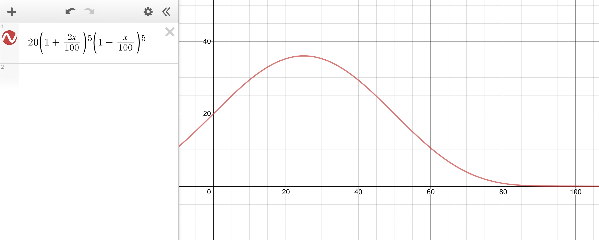

There are two envelopes on the table. You are told that one of them contains double the amount of money as the other. Say you open one and find $20, the other envelope therefore has either $10 or $40. The question is would you swap your envelope for the other one on the table.
Since it is equally likely that you picked the envelope with less money or more money, there should be a 50% chance of $10 in the other envelope and a 50% chance of $40. The expected value of the other envelope is 0.5*10 + 0.5*40 = 25, which is larger than the 20 you have on hand. You should switch. But this conclusion seems to always apply. No matter what amount you find in the first envelope you picked, it seems like you should always swap for the other. But how can your first choice always be worse than the other envelope? This is the two-envelope paradox.
I would like to demonstrate that the two envelopes are equal because of the risk involved in the trade by applying the concept of the Kelly bet, which was popularized by blackjack card counters and later on applied in investment management.
Let's look at the problem a different way. You walk into a casino with $20 dollars in your pocket. You are offered this bet that have 2-1 odds, but you have to bet half of your money. Betting half of your money in this case is $10, 2-1 odds means when you win, you get $20 on top of your original bet of $10, which lands you at $40. If you lose, you lose the $10 you bet, which puts you back to $10. This is the same bet as swapping the envelope.
The decision to swap can be thought of as "is it a good idea to take a bet with 2-1 odds with half of your money with a 50/50 chance?"
You might say "Of course! The expected value is positive as the math before had shown." But think about this: you walk into the casino with your entire savings, and you were offered this bet, would you still take the bet? You probably wouldn't. The risk seems daunting.
The $20 in the first example was arbitrary. The point of the problem is to maximize the your wealth no matter the starting amount. The fact is, you should think of the problem as betting your entire net worth for a 50/50 chance of halving or doubling, since the amount in the first envelope should represent your entire wealth in the situation, and that is the object you are trying to maximize.
Let's say you take the same bet 10 times, on average you are expected to win 5 times. To be clear, the bet here is defined as betting half of your capital on a 2-1 odds. You start off with $x dollars, the result would be given by the function:
x * (2)^5 * (0.5)^5 = x
Turns out you end up with the same amount. You might be wondering why I am using the geometric average, rather than the arithmetic average. It is precisely because every time you are forced to wager half of your capital. No matter how much money there is in the envelope, your downside is that you lose half of it. Therefore, there does not exist a situation where you find $20 in one envelope, and then swap, finds $40, and the next time you still bet $10 based off the original envelope, since this time you still have to bet half of your existing bankroll, which is $20 out of the $40 you have. To evaluate the decision to swap, you cannot make the same bet in dollar amount over and over again since it would be a different bet compared to the original. The act of swapping dictates that you put 50% of your capital at risk. Therefore, the geometric average is appropriate.
Why do I emphasize "half of your capital" so much? It's because this bet, 2-1 odds on a coin-toss sounds like a good deal. The upside is twice as large as the downside, and the outcomes are 50% each. In fact it is a good bet, just not with 50% of your capital.
If we graph out the outcomes after 10 wagers, assuming winning and losing 5 times each, but this time you can choose what percent of capital you bet with and have to stick to it, we get the graph below.

Here the x-axis is the % capital wagered. The y-axis is the money you have after 5 wins and 5 losses, if you started with $20. The (1+2x/100) and (1-x/100) represent the 2-1 odds on the bet. We can see that at 0%, which means not betting, the expected value is 20. At 50%, the expected value is also 20, exactly the same amount as not swapping!
The other interesting thing is that we see a peak at 25%. Turns out, the bet is a great bet if you only risk 25% of your capital each time. But since the envelope problem compels the player to risk half of his capital, it has the same expected value as not betting. We just solved the paradox!
This observation, that the same bet can be a good bet, or a really bad bet, depending on how much of your capital you wager, has interesting implications in poker games and capital markets.
Say an investment needs $100 upfront and has a 50% chance of losing everything and a 50% chance of becoming $300. It is a terrible investment for someone with only $100. But it's a great investment for someone with $400. It seems like the richer you are, the more gains you stand to reap because the same investment is actually less risky for you than for someone with less capital.
This is also why stocks were first sold. For Dutch East India Co., each voyage is very costly and carries a lot of risk. A voyage might not be a good idea even for a very rich person to fund since the investment may be too large for any single individual to risk. However, by selling shares to the public, the risk is shared among many. This created value because each person can risk the appropriate amount of his capital, while together, allowing the voyage to take place. Here we see the alchemy of finance.
In poker games, it is a particularly bad idea to play with someone with a much larger bankroll, with a much different risk tolerance, as I've learned the hard way. When someone buys in 4 times your buy-in and sloshes money around the table, you are squeezed out of the game. To call with the same amount of money, you are risking a much larger % of your capital, while the investment make sense for the other person. Your raise is a mosquito bite to him, and he is much more likely to call to see the next card.
Perhaps capitalism therefore intrinsically benefits the biggest player at the poker table. The largest bankroll has the most access to investment opportunities, simply because they can afford to take the risks deemed too big by others. Perhaps this is a factor in the exacerbation of inequality we see today.
In the 1950s, Ed Thorp, an American mathematician with a fascinating life story, developed the first card counting system in blackjack after reading John Kelly's paper on the Kelly criterion. He had tremendous success playing in casinos with his system and wrote a book called Beat the Dealer in 1962.
The Kelly criterion is a simple formula to decide what % of your capital you should bet depending on the odds of the bet and the chance of winning. Given below:
f* = p - q/b
f* is the fraction of the current bankroll to wager
p is the probability of a win
q is the probability of a loss
b is the odds of the wager
In the envelope case, the probability to win and lose are both 50%. The odds are 2. Therefore f* = 0.5 - 0.5/2 = 0.25. This is the exact peak of the graph seen above.
The Kelly bet is popularized among investment managers when deciding what % of a portfolio to allocate to a certain stock. Buffett is a famous proponent of the strategy. He took an outsized bet on Apple during the years 2016 - 2019, which has proven to be the most profitable trade ever.
Portfolio concentration is often criticized in academia and seen as imprudence. However, when the odds are favorable and the conviction strong, it does make sense to build large positions in a single company.